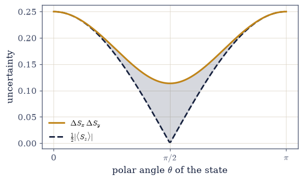

6.6 The Pauli Matrices, Incompatible Observables, and the Uncertainty Relation#
Notebook overview#
The Stern–Gerlach experiment (§6.4) showed us, as a brute fact, that measuring spin along \(x\) destroys what we knew about spin along \(z\); the postulates (§6.5) gave us the variance \(\Delta A\) that measures how un-sharp an observable is in a state. This notebook supplies the missing piece — the algebra that explains why the destruction happens and how much it must — and it turns out to be one of the cleanest results in all of physics: the uncertainty principle is a three-line theorem about operators that do not commute.
The central new object is the commutator \([A,B]=AB-BA\). We met it in §6.2 as the test for whether two operators share an eigenbasis; here it becomes the protagonist. Two observables are compatible — can be simultaneously sharp in a common basis — exactly when they commute, and incompatible when they do not. The Pauli matrices are the canonical incompatible observables: the three spin components pairwise fail to commute, \([\sigma_x,\sigma_y]=2i\sigma_z\) and cyclically, so a state perfectly definite along one axis is maximally uncertain along the others. That is the sequential Stern–Gerlach experiment, now as algebra rather than anecdote.
The heart of the notebook is the derivation of the Robertson uncertainty relation \(\Delta A\, \Delta B\ge\tfrac12|\langle[A,B]\rangle|\). We do not assert it — we derive it, gently and in full, from the Cauchy–Schwarz inequality of §6.1, the very inequality that bounded probability amplitudes there. The lesson is worth stating plainly and is easy to get wrong: the uncertainty principle is not a statement about clumsy instruments disturbing delicate systems. It is a theorem about non-commuting Hermitian operators, true of every state whether or not anyone is looking, and it is saturated — met with equality — by special minimum-uncertainty states.
As in every Volume VI notebook, each exercise opens with a crystal-clear statement and enumerated parts, each naming the exact operation — explicit Pauli-matrix construction, commutator and
anticommutator via the matrix-multiply @, numpy.vdot for the moments \(\langle A\rangle\) and
\(\langle A^2\rangle\), and numpy.linalg.eigh where spectra are needed.
How to read the checks. Each exercise closes with a
validatecall: the full Pauli algebra (commutators, anticommutators, the product identity); the maximal uncertainty of \(\sigma_x\) in a \(\sigma_z\)-eigenstate; the Robertson inequality holding for random observables and states; its saturation by \(|{+}z\rangle\); and the simultaneous definiteness of commuting observables. A ✓ is strong evidence; a ✗ is a prompt to locate the discrepancy.Conventions and scope. We work with \(\hbar=1\), so the spin operators are \(S=\tfrac12\boldsymbol \sigma\) with eigenvalues \(\pm\tfrac12\) (physically \(\pm\hbar/2\)); we restore \(\hbar\) in formulas where it clarifies. The qubit is the running example, with general Hermitian observables on \(\mathbb{C}^3\) for the general check. The position–momentum relation \(\Delta x\,\Delta p\ge\hbar/2\) from \([x,p]=i\hbar\) is §6.9; the angular-momentum algebra \([J_i,J_j]=i\hbar\varepsilon_{ijk}J_k\) is §6.14; complete sets of commuting observables catalogue the hydrogen atom in §6.17. See Sakurai & Napolitano (§1.4); Robertson (1929); Schrödinger (1930); and Notebooks §6.1 (Cauchy–Schwarz), §6.2 (commutators), §6.4 (the experiment), §6.5 (variance).
Theory in brief#
The Pauli matrices and spin operators#
The three Pauli matrices are the Hermitian observables of the qubit; the spin operators are \(S=\tfrac{\hbar}{2}\boldsymbol\sigma\),
They are exactly the observables a Stern–Gerlach magnet oriented along \(x\), \(y\), \(z\) measures (§6.4).
The algebra: commutators and the product identity#
The commutator \([A,B]=AB-BA\) measures the failure to commute. The Pauli matrices satisfy
equivalently \([S_x,S_y]=i\hbar S_z\) — the angular-momentum algebra (generalized in §6.14). The commutator is zero for compatible observables and non-zero for incompatible ones.
Compatible versus incompatible observables#
Two observables are compatible if \([A,B]=0\) — then (§6.2) they share an eigenbasis and can be simultaneously definite — and incompatible if \([A,B]\ne0\), when no common eigenbasis exists,
Concretely: in \(|{+}z\rangle\), where \(\sigma_z\) is perfectly definite, \(\langle\sigma_x\rangle=0\) and \((\Delta\sigma_x)^2=1\) — maximal uncertainty. This is the algebra of the sequential experiment.
The Robertson uncertainty relation — derived#
For any two observables and any state,
Derivation (Exercise 3). With the shifted operators \(\delta A=A-\langle A\rangle\), \(\delta B=B- \langle B\rangle\), the variance is \((\Delta A)^2=\langle\delta A^2\rangle\). Apply Cauchy–Schwarz (§6.1) to \(|\delta A\,\psi\rangle\) and \(|\delta B\,\psi\rangle\): \(\langle\delta A^2\rangle\langle\delta B^2\rangle\ge|\langle\delta A\,\delta B\rangle|^2\). Split \(\delta A\,\delta B=\tfrac12\{\delta A,\delta B\}+\tfrac12[A,B]\) into its Hermitian (anticommutator, real expectation) and anti-Hermitian (commutator, imaginary expectation) parts; dropping the anticommutator term keeps \(|\langle\delta A\, \delta B\rangle|^2\ge\big(\tfrac12|\langle[A,B]\rangle|\big)^2\), and the square root is the relation. It is Cauchy–Schwarz plus non-commutation — a theorem about operators, not instruments. (Keeping the anticommutator term gives the stronger Schrödinger relation; a pointer, not developed.)
Minimum-uncertainty states and complete sets#
The inequality is saturated by special states,
the most “classical” allowed states (the Gaussian wave packet is their position–momentum analogue, §6.9). And commuting observables can be measured together and labelled by joint eigenvalues; a maximal commuting set — a complete set of commuting observables — labels states uniquely,
which is how quantum states are catalogued (the hydrogen atom’s \(n,\ell,m,m_s\), §6.17).
Setup#
import matplotlib.pyplot as plt
import numpy as np
from ecp import draw, validate
ACCENT, INK, SOFT = draw.ACCENT, draw.INK, draw.SOFT
RED = "#c1121f"
# Conventions: ℏ=1, so the spin operators are S = ½σ with eigenvalues ±½. Observables are
# Hermitian matrices; moments use numpy.vdot (conjugate-first, §6.1); commutators/anticommutators use the
# matrix-multiply @. The qubit is the running example; general checks use Hermitian matrices on ℂ³.
# the Pauli matrices (the SX/SY/SZ of §6.2), the canonical incompatible observables
SIGMA_X = np.array([[0, 1], [1, 0]], dtype=complex)
SIGMA_Y = np.array([[0, -1j], [1j, 0]], dtype=complex)
SIGMA_Z = np.array([[1, 0], [0, -1]], dtype=complex)
ID2 = np.eye(2, dtype=complex)
# spin operators S = ½σ (ℏ = 1)
S_X, S_Y, S_Z = SIGMA_X / 2, SIGMA_Y / 2, SIGMA_Z / 2
def commutator(A, B):
"""The commutator $[A,B]=AB-BA$ {eq}`eq-pauli-algebra`.
Computed with the matrix-multiply operator ``@``. It vanishes for compatible observables and is
non-zero for incompatible ones; for Hermitian $A,B$ it is anti-Hermitian, so $\\langle[A,B]\\rangle$
is purely imaginary — the fact that makes the uncertainty bound real.
"""
return A @ B - B @ A
def anticommutator(A, B):
"""The anticommutator $\\{A,B\\}=AB+BA$ {eq}`eq-pauli-algebra`.
Computed with ``@``. For Hermitian $A,B$ it is Hermitian, so $\\langle\\{A,B\\}\\rangle$ is real; it
is the term dropped in the Robertson relation and kept in the stronger Schrödinger relation.
"""
return A @ B + B @ A
def expectation(A, psi):
"""The expectation value $\\langle A\\rangle=\\langle\\psi|A|\\psi\\rangle$ (§6.5), via ``numpy.vdot``.
Real because $A$ is Hermitian (``numpy.vdot(psi, A @ psi).real``).
"""
return np.vdot(psi, A @ psi).real
def dispersion(A, psi):
"""The uncertainty $\\Delta A=\\sqrt{\\langle A^2\\rangle-\\langle A\\rangle^2}$ {eq}`eq-uncertainty` (§6.5).
The square root of the variance — zero exactly when ``psi`` is an eigenstate of ``A`` (a definite
value). A small negative variance from rounding is clipped to zero before the square root.
"""
var = expectation(A @ A, psi) - expectation(A, psi) ** 2
return np.sqrt(max(var, 0.0))
def robertson_rhs(A, B, psi):
"""The Robertson lower bound $\\tfrac12|\\langle[A,B]\\rangle|$ {eq}`eq-uncertainty`.
Half the magnitude of the commutator's (purely imaginary) expectation value,
``0.5 * numpy.abs(numpy.vdot(psi, commutator(A, B) @ psi))`` — the floor under $\\Delta A\\,\\Delta B$.
"""
return 0.5 * np.abs(np.vdot(psi, commutator(A, B) @ psi))
Exercise 1 — The Pauli algebra#
Verify the algebra of the three Pauli matrices: the commutation relations \([\sigma_x, \sigma_y]=2i\sigma_z\) and its cyclic partners, the anticommutation \(\{\sigma_i,\sigma_j\}=0\) for \(i \ne j\), the squares \(\sigma_i^2=I\), and the product identity \(\sigma_i\sigma_j=\delta_{ij}I+i \varepsilon_{ijk}\sigma_k\) Eq. 412, Eq. 413.
Take the matrices
SIGMA_X,SIGMA_Y,SIGMA_Zfrom the setup.Compute the three commutators with the
commutatorhelper and confirm withnumpy.allclosethat they equal2j*SIGMA_Z,2j*SIGMA_X,2j*SIGMA_Y.Confirm the anticommutators
anticommutator(SIGMA_i, SIGMA_j)vanish for \(i\ne j\) and that eachSIGMA_i @ SIGMA_iequalsID2.Verify the product identity on a representative pair, e.g.
SIGMA_X @ SIGMA_Yequals1j*SIGMA_Z. Note that \(S=\tfrac12 \sigma\) turns the first relation into the angular-momentum algebra \([S_x,S_y]=iS_z\) (\(\hbar=1\)).
[σx,σy]=2iσz: True; [σy,σz]=2iσx: True; [σz,σx]=2iσy: True
{σi,σj}=0 (i≠j): True; σ²=I: True
product identity σxσy=iσz (cyclic): True; with S=½σ this is [Sx,Sy]=iSz (ℏ=1)
Validation 1#
✓ the Pauli matrices satisfy the full algebra: [σx,σy]=2iσz (cyclic), {σi,σj}=0 for i≠j, σ²=I, and σiσj=δijI+iεijkσk
True
Exercise 2 — The commutator as the test for compatibility#
Recall the sequential Stern–Gerlach destruction of §6.4. Show it is governed by the commutator: \(\sigma_z\) and \(\sigma_x\) are incompatible (\([\sigma_z,\sigma_x]\ne0\)), so a state perfectly definite along \(z\) is maximally uncertain along \(x\); contrast a compatible pair, which can be jointly sharp Eq. 414.
Compute \([\sigma_z,\sigma_x]\) with the
commutatorhelper and confirm it is non-zero — incompatible.In the \(\sigma_z\)-eigenstate \(|{+}z\rangle=\)
numpy.array([1,0]), compute \(\langle\sigma_x\rangle\) with theexpectationhelper and \((\Delta\sigma_x)^2\) with thedispersionhelper squared.Find \(\langle\sigma_x\rangle=0\) and \((\Delta\sigma_x)^2=1\) — the maximum possible for an observable with eigenvalues \(\pm1\) (no common eigenbasis).
Contrast with the compatible pair \((\sigma_z,\sigma_z^2)\): \([\sigma_z,\sigma_z^2]=0\), and both are perfectly definite in \(|{+}z \rangle\). Frame: this is the sequential experiment, algebraically.
[σz,σx] ≠ 0 (incompatible): True
in |+z⟩: ⟨σx⟩ = 0.000, (Δσx)² = 1.000 (maximal — eigenvalues ±1)
[σz,σz²] = 0 (compatible): True; both definite in |+z⟩: True
Validation 2#
✓ an incompatible observable is maximally uncertain in an eigenstate of its partner: σx has ⟨σx⟩=0 and (Δσx)²=1 in |+z⟩ [max|Δ| = 0 (rtol=1e-06, atol=1e-12)]
✓ the commutator is the test for compatibility: [σz,σx]≠0 (incompatible, cannot be jointly sharp) while [σz,σz²]=0 (compatible, both definite)
True
Exercise 3 — Deriving the uncertainty relation#
Derive the Robertson uncertainty relation \(\Delta A\,\Delta B\ge\tfrac12|\langle[A,B] \rangle|\) from the Cauchy–Schwarz inequality of §6.1, and verify each step numerically for random Hermitian observables and a random state Eq. 415.
Build Hermitian \(A,B\) on \(\mathbb{C}^3\) and a unit state, and form the shifted operators \(\delta A=A-\langle A\rangle I\) and \(\delta B=B-\langle B\rangle I\), so \((\Delta A)^2= \langle\delta A^2\rangle\).
Cauchy–Schwarz (§6.1) applied to \(|\delta A\,\psi\rangle\) and \(|\delta B\,\psi\rangle\) gives \(\langle\delta A^2\rangle\langle\delta B^2\rangle\ge|\langle\delta A\, \delta B\rangle|^2\) — verify it (
numpy.vdotfor each inner product).Split \(\delta A\,\delta B= \tfrac12\{\delta A,\delta B\}+\tfrac12[A,B]\); confirm \(\langle\{\delta A,\delta B\}\rangle\) is real and \(\langle[A,B]\rangle\) is purely imaginary, so \(|\langle\delta A\,\delta B\rangle|^2=\big(\tfrac12 \langle\{\delta A,\delta B\}\rangle\big)^2+\big(\tfrac12|\langle[A,B]\rangle|\big)^2\).
Dropping the (non-negative) anticommutator term leaves \(\Delta A\,\Delta B\ge\tfrac12|\langle[A,B]\rangle|\) — the
robertson_rhshelper. Frame: the uncertainty principle is Cauchy–Schwarz plus non-commutation.
(2) Cauchy–Schwarz ⟨δA²⟩⟨δB²⟩ = 49.2950 ≥ |⟨δAδB⟩|² = 20.1564: True
(3) ⟨{δA,δB}⟩ real (Im=-4.4e-16); ⟨[A,B]⟩ imaginary (Re=-5.6e-16)
(4) ΔA·ΔB = 7.0210 ≥ ½|⟨[A,B]⟩| = 4.4322: True
Validation 3#
✓ ΔA·ΔB ≥ ½|⟨[A,B]⟩| follows from Cauchy–Schwarz: |⟨δAδB⟩|² splits into anticommutator + commutator squares, and the relation holds for all tested observables and states
True
Exercise 4 — The spin uncertainty relation, verified and visualized#
Specialize the relation to the spin components: verify \(\Delta S_x\,\Delta S_y\ge \tfrac12|\langle S_z\rangle|\) across a family of qubit states, and visualize how the uncertainty product rides above the state-dependent bound Eq. 415.
Parametrize qubit states on the Bloch sphere, \(|\psi(\theta,\varphi)\rangle= \cos\tfrac{\theta}{2}|{+}z\rangle+e^{i\varphi}\sin\tfrac{\theta}{2}|{-}z\rangle\) (a light preview of §6.8), sweeping \(\theta\) at a fixed generic \(\varphi\).
For each state compute \(\Delta S_x\), \(\Delta S_y\) with the
dispersionhelper and the bound \(\tfrac12|\langle S_z\rangle|\) with therobertson_rhshelper (which equals it, since \([S_x,S_y]=iS_z\)).Confirm \(\Delta S_x\,\Delta S_y\ge\) the bound everywhere.
Plot the product and the bound against \(\theta\). Frame: the bound is state-dependent (through \(\langle S_z\rangle\)) — uncertainty is a trade-off set by the state, not a fixed number.
ΔSx·ΔSy ≥ ½|⟨Sz⟩| across the state family (φ=1.0): True
at θ=0 (|+z⟩): product = 0.2500, bound = 0.2500 (saturated)
at θ=π/2: product = 0.1137, bound = 0.0020 (slack)
Validation 4#
✓ the spin-component uncertainty relation ΔSx·ΔSy ≥ ½|⟨Sz⟩| holds across the whole Bloch-sphere family of states
True

Fig. 430 The uncertainty relation is a state-dependent trade-off. Across a family of qubit states (sweeping the polar angle \(\theta\) at a fixed azimuth), the uncertainty product \(\Delta S_x\,\Delta S_y\) (amber) never falls below the Robertson bound \(\tfrac12|\langle S_z\rangle|\) (ink); the shaded gap is the slack. The bound itself moves with the state — it is largest where the atom is most definite along \(z\) (the poles, \(\theta=0,\pi\)), and there the product saturates, touching the bound exactly. Uncertainty is not a fixed number stamped on the observables; it is a trade-off whose floor each state sets through \(\langle S_z\rangle\). The principle is the inequality, true everywhere; the minimum-uncertainty states are where it becomes an equality.#
Exercise 5 — Minimum-uncertainty states#
The relation is an inequality, but for special states it becomes an equality. Show that the \(\sigma_z\)-eigenstate \(|{+}z\rangle\) saturates the spin uncertainty relation, \(\Delta S_x\, \Delta S_y=\tfrac12|\langle S_z\rangle|=\tfrac14\) Eq. 416.
For \(|{+}z\rangle\), compute \(\Delta S_x\) and \(\Delta S_y\) with the
dispersionhelper and their product.Compute the bound \(\tfrac12|\langle S_z\rangle|\) with the
robertson_rhshelper.Confirm product and bound are equal (\(\tfrac14=\tfrac14\)) — a minimum-uncertainty state.
Note that a generic state (e.g. \(\theta=1,\varphi=1\)) does not saturate, leaving slack. Frame: minimum-uncertainty states are the most “classical” allowed; the Gaussian wave packet is their position–momentum analogue (§6.9).
|+z⟩: ΔSx·ΔSy = 0.2500, ½|⟨Sz⟩| = 0.2500 saturated: True
generic (θ=1,φ=1): ΔSx·ΔSy = 0.1572, ½|⟨Sz⟩| = 0.1351 slack: 0.0222
Validation 5#
✓ |+z⟩ saturates the uncertainty relation, ΔSx·ΔSy = ½|⟨Sz⟩| = ¼ — a minimum-uncertainty state [got 0.25 vs expected 0.25 (rtol=1e-12)]
True
Exercise 6 — Compatible observables and a complete set#
When observables commute the trade-off disappears: they can be simultaneously sharp, and their joint eigenvalues label states. Verify that \(S_z\) and \(S_z^2\) commute and are both definite in \(|{+}z\rangle\), and explain how a maximal commuting set labels states uniquely Eq. 414, Eq. 417.
Compute \([S_z,S_z^2]\) with the
commutatorhelper (S_Z @ S_Zfor \(S_z^2\)) and confirm it is the zero matrix (numpy.allclose).Confirm both \(\Delta S_z\) and \(\Delta S_z^2\) are zero in \(|{+}z\rangle\) with the
dispersionhelper — both perfectly definite.Note that the commuting bound \(\tfrac12|\langle[S_z,S_z^2]\rangle|=0\), so the relation is trivially satisfied with no trade-off.
Reason in prose: joint eigenstates of commuting observables carry joint eigenvalue labels, and a complete set of commuting observables labels every state uniquely — the way the hydrogen atom’s states are tagged by \((n,\ell,m,m_s)\) in §6.17. Frame: how quantum states are catalogued.
[Sz, Sz²] = 0 (compatible): True
in |+z⟩: ΔSz = 0.00e+00, ΔSz² = 0.00e+00 (both definite)
½|⟨[Sz,Sz²]⟩| = 0.00e+00 (zero: no uncertainty trade-off)
→ commuting observables carry joint eigenvalue labels; a complete set labels states uniquely (e.g. hydrogen's n,ℓ,m,m_s, §6.17).
Validation 6#
✓ compatible observables ([Sz,Sz²]=0) can be simultaneously definite (both sharp in |+z⟩) and jointly label states
True
Exercise 7 — The general uncertainty relation in a larger space (student)#
The relation is universal — it holds for any pair of observables on any space, not just spins. For two random Hermitian observables on \(\mathbb{C}^3\) and a random state, verify Robertson’s inequality and measure how far the state is from saturating it Eq. 415.
Build Hermitian \(A,B\) on \(\mathbb{C}^3\) (symmetrize random complex matrices,
M + M.conj().T) and a normalized random state.Compute \(\Delta A\), \(\Delta B\) with the
dispersionhelper and the bound withrobertson_rhs.Confirm \(\Delta A\,\Delta B\ge\tfrac12| \langle[A,B]\rangle|\) and report the saturation ratio \(\tfrac12|\langle[A,B]\rangle|/(\Delta A\, \Delta B)\in[0,1]\).
Observe that the ratio is usually well below \(1\) — the bound is loose unless the state is special. Frame: the inequality is universal but rarely tight.
ΔA·ΔB = 3.0048 ≥ ½|⟨[A,B]⟩| = 0.8538: holds = True
saturation ratio = 0.284 (≪ 1: the bound is loose for a generic state)
Validation 7#
✓ the Robertson uncertainty relation holds for an arbitrary pair of Hermitian observables on ℂ³, with a saturation ratio in [0,1]
True
Exercise 8 — The uncertainty principle is an algebraic fact#
The strangeness of the sequential Stern–Gerlach experiment was never about disturbing delicate atoms. It was the algebra. Two observables that fail to commute cannot both be sharp in any state, and how sharply they can be co-defined is bounded below by their commutator: \(\Delta A\,\Delta B\ge \tfrac12|\langle[A,B]\rangle|\). The Pauli matrices made this concrete — the three spin components pairwise anticommute and fail to commute, so definiteness along one axis forces maximal uncertainty along the others — and Cauchy–Schwarz, the same inequality that bounded amplitudes in §6.1, made it general. Minimum-uncertainty states saturate the bound; commuting observables escape it entirely and can be jointly sharp, labelling states by their joint eigenvalues.
This exercise (synthesis). No new computation: the theorem is the result. “You cannot know both at once” sounds like a limitation imposed on us by clumsy instruments. It is the opposite — a fact about the observables themselves, true whether or not anyone is looking, and we derived it in three lines from the geometry of the Hilbert space. The next notebook (§6.7) finally sets the state in motion: the dynamics postulate worked out, the Hamiltonian generating unitary evolution, and the spin precessing on the very Bloch sphere this uncertainty trade-off lives on.
Notebook summary#
The algebra behind the incompatibility that Stern–Gerlach showed and the variance measured — and the uncertainty principle as its theorem.
The Pauli algebra Eq. 412, Eq. 413: \([\sigma_x,\sigma_y]=2i\sigma_z\) (cyclic), \(\{\sigma_i,\sigma_j\}=0\), \(\sigma_i^2=I\), \(\sigma_i\sigma_j=\delta_{ij}I+i\varepsilon_{ijk} \sigma_k\) — equivalently \([S_x,S_y]=iS_z\), the angular-momentum algebra.
Compatibility Eq. 414: \([A,B]=0\) means jointly sharp; \([A,B]\ne0\) means not — and \(\sigma_x\) is maximally uncertain (\((\Delta\sigma_x)^2=1\)) in a \(\sigma_z\)-eigenstate.
The Robertson relation, derived Eq. 415: \(\Delta A\,\Delta B\ge\tfrac12|\langle[A,B] \rangle|\), from Cauchy–Schwarz (§6.1) plus the commutator/anticommutator split — a theorem about operators, true of every state, not measurement disturbance.
Minimum-uncertainty states Eq. 416: \(|{+}z\rangle\) saturates \(\Delta S_x\,\Delta S_y =\tfrac14=\tfrac12|\langle S_z\rangle|\) — the most classical states allowed.
Complete sets Eq. 417: commuting observables can be jointly sharp and label states by joint eigenvalues (hydrogen’s \(n,\ell,m,m_s\), §6.17).
The uncertainty principle is Cauchy–Schwarz plus non-commutation. The commutator is literally the floor on how much two observables must trade off — an algebraic fact, true whether or not anyone looks.
Outlook#
Time evolution (§6.7): the Hamiltonian as generator, \(U(t)=e^{-iHt/\hbar}\), spin precession and Rabi oscillations — the state set in motion.
The Bloch sphere (§6.8): the geometry of qubit states, where this uncertainty trade-off is visible.
Position and momentum (§6.9): \([x,p]=i\hbar\) gives \(\Delta x\,\Delta p\ge\hbar/2\), with the Gaussian as the minimum-uncertainty state.
The angular-momentum algebra generalized (§6.14): \([J_i,J_j]=i\hbar\varepsilon_{ijk}J_k\), the full theory of spin and orbital angular momentum, and complete sets of commuting observables (§6.17).
Cross-reference §6.1 (Cauchy–Schwarz), §6.2 (commutators / common eigenbasis), §6.4 (the experiment), §6.5 (variance), and forward to §6.7, §6.8, §6.9, §6.14, §6.17.